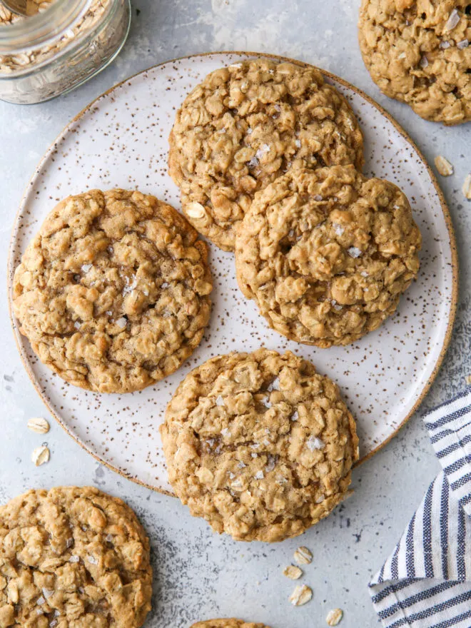

They’re not fancy. They’re not even very pretty. They’re just basic drop cookies filled with oats and a hint of cinnamon. Dessert possibly couldn’t get any less sophisticated.
BUT, sometimes simple is best. And these chewy oatmeal cookies really are the best. They’ve got a great chewy texture, delicious buttery-brown sugar flavor, and they’re so nostalgic. I dare you to stop at just one!
Ingredients:
- ½ cup butter , at room temperature (113 grams, 1 stick)
- 1 cup packed light or dark brown sugar (213 grams)
- ¼ cup granulated sugar (50 grams)
- 2 large eggs
- 2 teaspoons vanilla extract
- 1 ½ cups all-purpose flour (200 grams)
- ½ teaspoon baking soda
- ½ teaspoon salt
- ½ teaspoon ground cinnamon
- 3 cups old-fashioned rolled oats , not quick cooking (297 grams)
- Optional add-ins: 1 cup semi-sweet chocolate chips, chopped nuts, dried fruit, or M&Ms
- Coarse of flaky salt , for sprinkling (optional)
Directions
- Preheat oven to 350°F. Line sheet pan with parchment paper.
- In bowl of stand mixer fitted with paddle attachment, or in large bowl with hand-held mixer, beat butter, brown sugar and sugar until creamy, about 2-3 minutes. Add eggs one at a time, mixing after each. Add vanilla and mix until well combined.
- In medium bowl, combine flour, baking soda, salt, cinnamon and oats. Add to butter mixture all at once and mix on low until combined.
- Use a medium (1½ tablespoon) or large cookie scoop (3 tablespoon) to portion dough and arrange a few inches apart on sheet pans lined with parchment paper.
- Bake until edges just begin to turn golden, about 8-10 minutes for smaller cookies, 10-12 minutes for larger cookies.
- Repeat with remaining cookie dough.
- Sprinkle baked cookies with coarse salt, if desired. Let cookies cool on the sheet pan for 5 minutes, then transfer to a wire rack to cool completely. Enjoy within a few days!